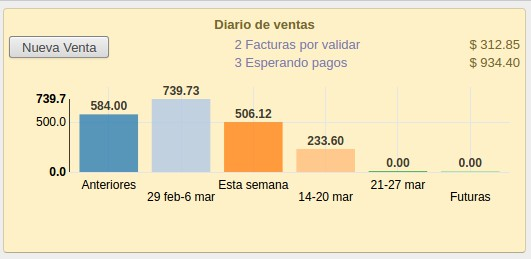

<section class="oe_container">
    <div class="oe_row oe_spaced">
        <div class="oe_span12">
            <h2 class="oe_slogan">Graph Widget for Kanban</h2>
            <h3 class="oe_slogan">This widget allows to display graph in kanban view using NVD3 library.</h3>
        </div>
        <div class="oe_span12">
            <h3>Use</h3>
            <p class="oe_mt32">
                <code>
&lt;field name="kanban_dashboard_graph" widget="kanban_graph"/&gt;
                    </code>
            </p>

        </div>
        <div class="oe_span6">
            <h3>Data Example</h3>
            <p class="oe_mt32">
                <pre>
[{"values": [
  {"value": 584.0, "label": "Anteriores"},
  {""value": 739.73, "label": "29 feb-6 mar"},
  {"value": 506.12, "label": "Esta semana"},
  {"value": 233.6, "label": "14-20 mar"},
  {"value": 0.0, "label": "21-27 mar"},
  {"value": 0.0, "label": "Futuras"}
], "id": 2}]
                </pre>
            </p>
        </div>
        <div class="oe_span6">
            <h3>Result</h3>
            <div class="oe_demo oe_picture oe_screenshot">
                
            </div>
        </div>
    </div>
</section>